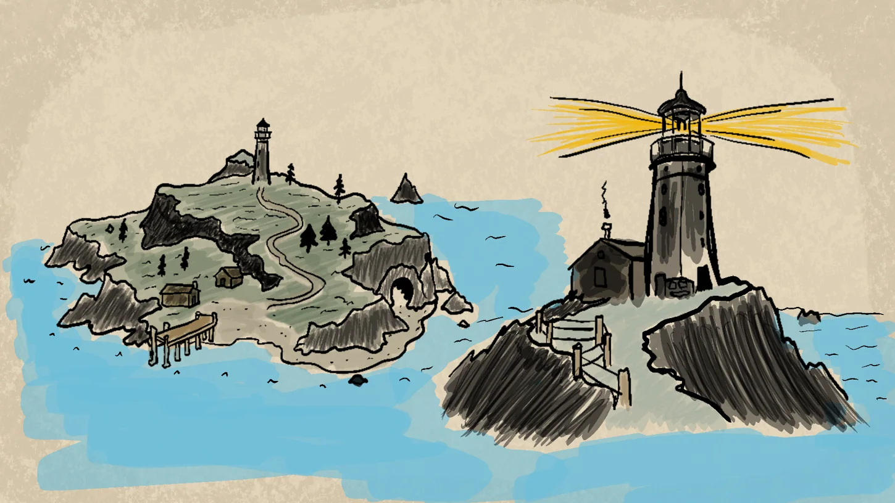
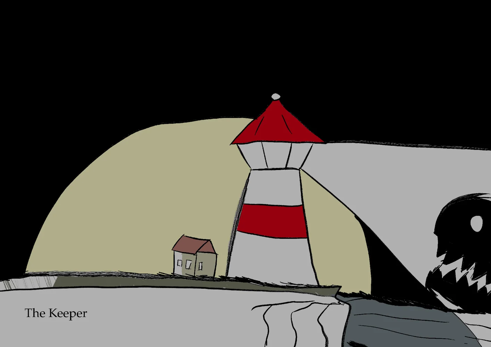
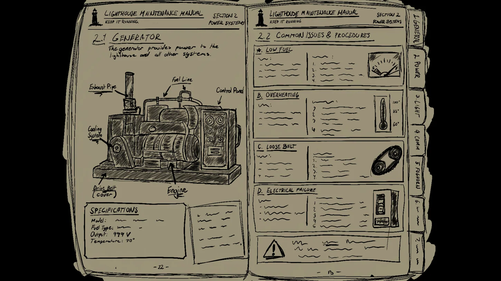
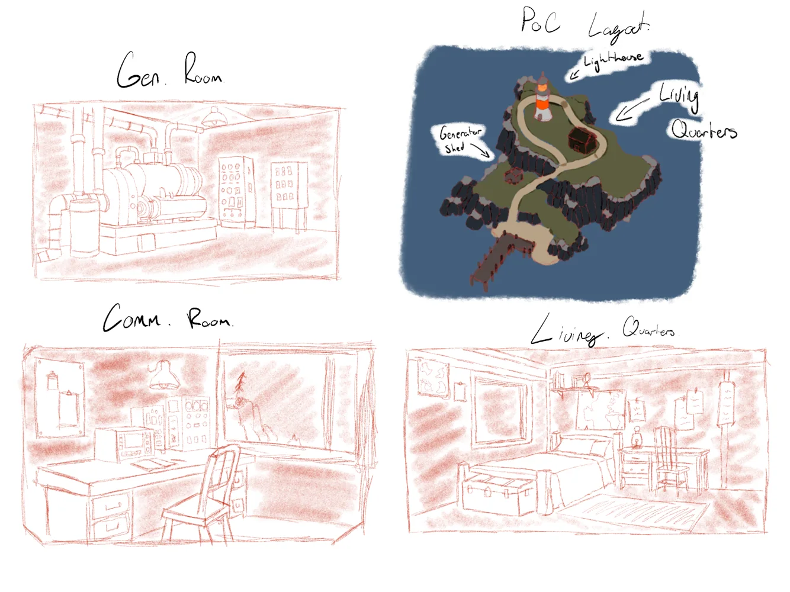

Academic game production · Work in progress
The Keeper In progress
A 14-person, two-semester Unreal Engine 5.6.1 student project about maintaining a haunted island lighthouse. As producer, I support the team through check-ins, production planning, schedules, and hours tracking.
- Role
- Producer · production coordination and documentation
- Team
- 14-person student team · SandPiper Studios
- Tools
- Unreal Engine (game engine), Maya (modeling/animation), Substance Painter / Designer (texturing), ClickUp (task management), spreadsheets (planning and hours tracking)
- Timeline
- Fall 2026 – Spring 2027 (WIP)
- Deliverables
- Vertical slice targeted for December 2026; final release target May 2027
The game: concept & scope
The Keeper is a first-person psychological horror game set in 1998. The player takes a temporary position maintaining an isolated island lighthouse over three days, balancing repairs and ship communication with exploring the island’s abandoned structures and uncovering its history.
The design centers on interconnected maintenance systems—power generation, electrical controls, rotating lighthouse equipment, and radio communications. Equipment failures create time pressure, while fog, declining sanity, and shadowy apparitions make exploration increasingly dangerous. The maintenance manual doubles as a repair guide and a way to revisit discovered story details.
This is the team's current work-in-progress design direction, not a claim that every listed system has been implemented.
Visual direction
The art style guide describes a gritty, rustic island with stylized-realistic textures, muted blue-tinted lighting, forest and cave environments, and mid-century industrial architecture. Environmental fog and post-processing are intended to reinforce isolation and unease.




Concepts reproduced from the team’s Art Style Guide, SandPiper Studios. These are shared project visuals, not artwork I am claiming to have created.
My role: production coordination
My work on The Keeper is primarily behind the scenes. I check in with teammates and discipline leads, keep tabs on the status of their tasks, and maintain production documents and time sheets. This work makes ownership and expectations easier to follow as design, programming, art, and other disciplines build the game in parallel.
- Team follow-ups: Check on task progress, upcoming deliverables, and areas that may need attention.
- Documentation: Build and update production plans, milestone breakdowns, and schedules.
- Time tracking: Maintain hours sheets and review reported work so progress can be tracked across the semester.
- Coordination: Work with leads to clarify task ownership, scope, and what needs to happen before the next build.
Production artifact: development Gantt chart
I created and maintained a development Gantt chart to organize work by discipline and relate individual tasks to larger delivery stages. The workbook contains a timeline overview, a detailed task list with owners and priorities, and notes on the vertical-slice and final-release requirements.
View the production Gantt chart (.xlsx)
Example tasks from the production plan
| Planned activity | Owner | Purpose |
|---|---|---|
| Vertical-slice scope and acceptance criteria | Luisa | Define what the milestone needs to include |
| ClickUp ownership and task breakdown | Luisa + leads | Map responsibilities across disciplines |
| Weekly reviews, builds, and hours | Luisa | Keep delivery and time reporting visible |
| Scope and risk checkpoints | Luisa + leads | Review dependencies before milestone decisions |
These are entries from the planning sheet, not a list of tasks confirmed complete. The workbook marks them as planned at the time of export.
Production artifact: Week 12 time tracking
To support the team’s weekly reporting, I organized and exported timesheets and kept my own work logged by task. This is an example of the production administration I handled while monitoring a 14-person team.
| My reported activity | Estimated | Actual | Logged status |
|---|---|---|---|
| Planning / Documentation | 6 h | 3.50 h | Complete |
| Planning and Water Shader | 3 h | 2.75 h | Complete |
| Group Check-In and Timesheet Organization / Exporting | 3 h | 2.18 h | Complete |
| Week 12 total | 12 h | 8.43 h | 3 entries |
Source: SandPiper Studios Week 12 TMCC timesheet, my individual worksheet. This summary excludes other team members’ individual hour logs. The entries document my recorded work, not the entire project’s progress.
The water-shader entry is a small research and implementation contribution; the majority of my role remains production coordination, scheduling, and documentation.
How the process evolved
Rather than tracking the project as one large deliverable, the schedule separates pre-production, vertical-slice work, and full production. It also breaks responsibilities into production, design, narrative, programming, art, and other disciplines. That structure supports more specific check-ins: who owns a task, what is due next, and whether it affects the next build.
The design covers several connected systems and locations, so the production plan needs to track dependencies across environment art, gameplay, narrative, UI, and technical implementation. I use milestones and teammate check-ins to help keep those parallel workstreams visible.
The planning document distinguishes the early-December vertical-slice target from the May 2027 final-release target. Dates on individual tasks are proposed planning dates, not official faculty deadlines.
What I am learning
This project is helping me practice production as ongoing communication, not just making a schedule once. When the team is large, consistent follow-ups, organized documentation, and clear ownership help people understand how their individual work fits into a playable build. I'm continuing to improve how I collect updates and make those updates useful to the rest of the team.
Current status
The Keeper remains in development. The Gantt chart documents planned milestones, while the Week 12 timesheet shows a dated example of my actual completed production tasks. Future updates can add milestone retrospectives as the team reaches them.